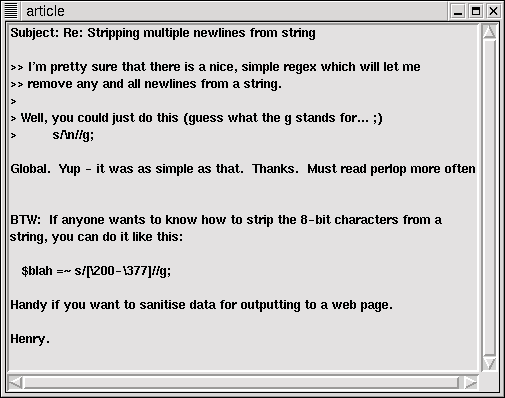
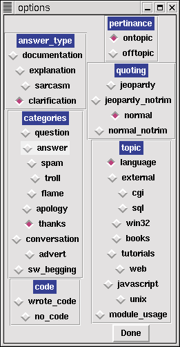

| News sources mentioned |
| comp.lang.perl.misc.....................news://comp.lang.perl.misc Slashdot....................................................http://slashdot.org The Washington Post....................http://washingtonpost.com |
The fate of Usenet has been bantered about quite a bit lately. Slashdot posters have proclaimed the death of Usenet (http://slashdot.org/article.pl?sid=00/02/04/2224201), and even a Washington Post article claims that Usenet mave have outlived its usefulness (http://search.washingtonpost.com/wp-srv/WPlate/2000-02/04/066l-020400-idx.html). They both seem to suggest that Usenet newsgroups will be replaced by special-purpose web-based discussion forums, like Slashdot. Furthermore, a series of flamewars and a barrage of CGI questions in comp.lang.perl.misc have had many in the Perl community wondering about the viability of comp.lang.perl.misc, and how long it can last.
Myself, I'm a big fan of the newsgroup. I learned a lot of Perl from it, and more importantly I learned how to answer questions for new Perl programmers. I gained a lot of experience by simply lurking, and then posting, to the group. What follows is an in-depth analysis of the articles posted to comp.lang.perl.misc, all nicely trimmed and categorized — and a little speculation on what makes the group tick.
| Figure 1. A question and answer on comp.lang.perl.misc. |
|  |
A Little History
The Usenet group comp.lang.perl.misc was created in May 1995. The charter originally described it as a newsgroup for "discussion of issues of all sorts relating to Perl." It's become exactly that. The topics in the group range from discussion of Perl's guts to CGI programming with Perl.
The group is high-traffic, often receiving over 200 posts a day. The posters are new Perl programmers, experts, and the occasional visits by people who were looking for other groups. The "experts" can be people who are still learning Perl and happen to know enough to answer the question at hand, up to gurus who speak at conferences, write books, and hack on Perl itself.
How the Day in the Life was Done
Before diving into the statistics, a brief description of how they were gathered. I analyzed all the threads with messages posted on Groundhog Day, 2000. Why February 2? Because I decided to write the article on the 4th, and my local newsfeed had several days of articles remaining in the spool. This meant that I didn't have to use Deja News to retrieve articles. I wasn't trying to find (or avoid) flame wars; it was mostly just a convenient day for me.
Any thread that was open on February 2 was considered for the statistics. According to my newsfeed, exactly 250 articles were posted on that day. Once messages posted on other days that belonged to February 2 threads were included, there were 432 articles that needed to be read, sorted, graded, and judged.
| Figure 2. a Perl/Tk categorization tool for comp.lang.perl.misc |
|  |
Each article was judged on its own merits. The quality of the questions (except for determining whether the poster's subject line was appropriate) was ignored. If a poster flamed a good question, or counter-flamed, it was still considered a flame. Sarcastic, flame-baited answers were considered both answers and flames — articles could to fall under multiple headings — the same message could be "off-topic", "flame", and an "answer".
The Raw Statistics
There were 109 questions posted to the group in that period, of which 30 included some code. This means that the person asking the question (and later on, the person answering) included some attempt at writing the code and was seeking correction, syntax help, advice, or debugging.
17 questions were simply off-topic, having no Perl content whatsoever. The topic for c.l.p.misc is "issues of all sorts relating to Perl", so anything involving Perl is fair game. Many people in c.l.p.misc feel that CGI questions are off-topic for the group, and I do as well — except when it's about CGI pm module usage, or Perl CGI programs that aren't working. To me, this is just the latest trend in computing. It used to be client/server applications, and next it might be distributed computing. Perl adapts to its environment so well, it's natural that c.l.p.misc's posts would drift toward current trends. And it's not just CGI. Half the off-topic posts were about SQL or databases of one kind or another, having nothing to do with Perl (or its modules) whatsoever.
How many of those 109 questions were answered? All but four of them were eventually answered with code, suggestions to move along to another group, documentation pointers, or other helpful information. This is a response rate of over 96%. Some of them took a few days to be answered, and I stopped checking after four days to see if the remaining four would be answered.
Of the 109 questions, only 60 had what I'd consider to be good subject lines, where the body of the message was adequately described. (I was being quite generous.) At this point, I'd like to kick out a few soapboxes, and point out that of those 49 bad subject lines, only one was changed by the responder.
On the subject of subject lines, the articles broke down along these lines, with the major theme being the following:
On Topic Articles
209 Perl language usage, bugs, questions, and answers
29 Windows-specific questions
20 Web questions
18 Module usage questions
12 Books
14 Questions about programs that Perl interacts with
(sendmail, shell questions, ...)
Off Topic Articles
18 Web articles (CGI, HTTP, or web server issues)
10 Database (SQL language, database server issues, ...)
9 Questions about running programs other than Perl
4 Javascript postings
8 Windows, Unix or OS conversations; unrelated to Perl
There were 30 articles which were neither questions or answers, just casual on-topic conversation about Perl.
The Day's Weather Report
Overall, things in the newsgroup were calm that day. 178 answers were posted to the group, and a suprising 70 of them included code written by the responder.
Flames were moderate that day as well. Only 14 articles were categorized as true flames: content-free, without any merit whatsoever and existed only to say "NO, THAT'S WRONG!" Suprisingly (or not, depending on your view) almost all eleven flames were from channel regulars.
Finishing on a good note, there were sixteen messages that were Thank You's. Not simply "TIA" (thanks in advance), but honest thanks for information passed along. They acknowledged the advice sent, seemed to benefit from it, and were polite enough to respond accordingly. Who says civility is dead?
The group c.l.p.misc has a blessing almost unique to Usenet newsgroups: there's almost no spam. Only three articles out of all 432 could be considered advertising, and two were on-topic. The two on-topic posts were a Call for Papers for the O'Reilly Perl Conference in Monterey, and a job listing for a Perl programmer (which should have been posted elsewhere). The off-topic posting, way off the mark, was a broadly-crossposted Call for Papers for a USENIX Windows NT Symposium. Shame on USENIX; they should know better.
Netiquette Nits
Abusive crossposting was almost non-existent. Most of the crossposts were between comp.lang.perl.misc and any one of alt.perl, comp.lang.perl.modules, or the obsolete comp.lang.perl. 70 articles were crossposted total. Only 5 articles were crossposted to three or more groups, and none (except the aforementioned USENIX spam) to more than 5.
Despite all of the moaning about munging email addresses when comp.lang.perl.moderated was being created, addresses are almost never hidden in comp.lang.perl.misc. By visual inspection, there were 418 unique e-mail addresses over that period. Twenty of them were obviously forged or undeliverable. (I didn't actually send mail to the 418 addresses to verify they were real, but I did read all of the relevant articles and only counted those that were clearly munged for spam protection.)
The other netiquette gripe is about trimming quoted posts and submitting Jeopardy-style messages — where the quoted article appears after the response, so that reading top-to-bottom the answer appears first and then the question. Only 248 of the 314 articles with any quoting had the quoted material trimmed down at all. Only one person who employed Jeopardy-style quoting trimmed the quoted material.
Of the 66 articles that weren't trimmed at all (but containted quoted material), 37 were Jeopardy-style and 29 were traditional (quoted material, then response). This seems to support the notion that Jeopardy-style posters do not trim at all, and make up the majority of those posters who don't trim.
And what about the FAQs? Of the 92 on-topic questions, only 15 were on the FAQ list (the "core" FAQ, the Win32 FAQ, or the Idiots Guide). Five of the remaining questions were questions about the FAQ — all of them because the FAQ sometimes presents simple and complex answers to the same question without clear explanation as to which should be used. In one respondent's words, "the FAQ tries to be too cute sometimes." This is not a new complaint. The 72 remaining questions could not clearly be answered by any of the FAQs. What I unfortunately did not analyze were the proportion that could have been answered by reading the documentation. (That is, questions that were clearly about well-documented features and did not need further explanation by someone more experienced in the field.)
The Regulars
Who answers all of these questions? The group has a core of regulars, to be sure. These folks have been reading c.l.p.misc for years and still find time to reply to questions and to monitor the group. Tom Phoenix, Randal Schwartz, and Larry Rossler, to name a few. These guys were posting when I was just learning Perl and they're still going strong.
Of course, there are some who have dropped out. Larry Wall no longer posts to comp.lang.perl.misc, and recently Tom Christiansen has dropped out as well. The high volume of posts, the number of novices, and the frequency of FAQs contributes to the dropout rate. The comp.lang.perl.moderated group and the perl5-porters mailing list remain refuges to hear these voices.
In addition to the hardcore old-timers are those that answer a question here and there. As the core gets whittled down, they find themselves taking on more and more questions.
Why do people post? A quick survey of the regulars appearing in Greg Bacon's comp.lang.perl.misc statistics turned up a few reasons. Foremost seems to be that they're doing this as a learning experience for themselves. As Jonathon Stowe put it, "every program I write now — I treat it as if it were going to be exposed to the criticism of c.l.p.m. and so apply those coding standards to everything I write."
There is also a wish not to see Perl misrepresented, and genuine desire to help others. The last reason common to all the regulars who answered was to participate in the Perl community in some small way.
The Future of comp.lang.perl.misc
Where does the group go from here? I asked the regulars if they were satisfied with the state of comp.lang.perl.misc, and almost universally they answered no. The answers were not unexpected:
• Posters need to read more documentation before posting.
• Posters need to lurk, or search newsgroup archives before posting.
• Posters need to stay on topic.
For comparison's sake, I showed the messages to other Usenet old-timers and the reaction was "well, these apply to any group on Usenet..."
Some of the regulars have taken fanatical measures to ensure that the group stays on track, and this lends a reputation (deserved or not) to c.l.p.misc that it's a newbie-hostile group. However, like any other static institution bombarded with change and youth, it has been changing and flexing to suit its environment. When the newbies wear down the old regulars, new regulars step in and take up the slack. I believe the group is doing just fine, and isn't getting any worse or better over the years. A quick survey of February 2, 1998 and February 2, 1996 shows that the group hasn't changed much. Some of the regulars have gone, others have arrived. The topics have changed (more DBI and web, less networking and system administration), but the basic themes haven't.
It would be nice if newbies lurked more, and read the documentation before posting. But even so, the group itself seems to be responding well and shaping itself to the trends it encounters. comp.lang.perl.misc should continue to be a useful resource for a long time to come.
_ _END_ _